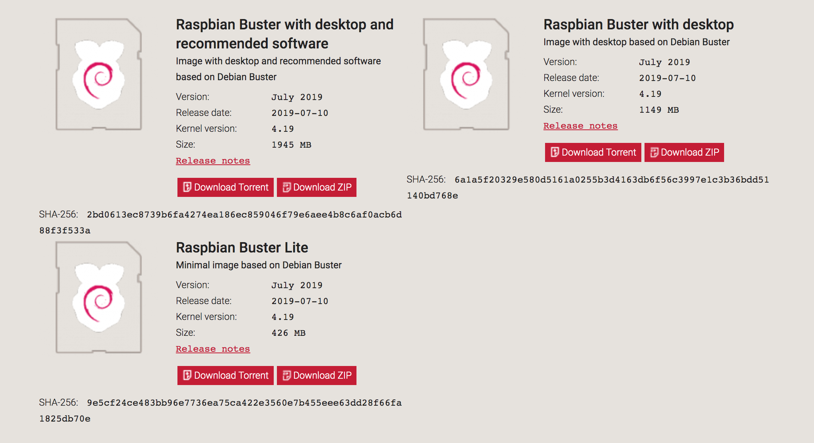

DonkeyCarのインストール
参考: DonkeyCar公式ページ
最新のDonkeyCarをインストールします。 公式サイトに沿ってインストールしていきます。
Raspberry Piのイメージ
Raspberry Piのイメージをダウンロードします。
通信が遅い場合は、ミラーサイトからダウンロードします。
Raspbian Buster Lite(20019-07-12)を使用します。

焼き込み
焼き込みには、Etcherを使い焼き込みます。 https://www.balena.io/etcher/
ダウンロードしたをRaspberry PiのイメージをmicroSDカードに焼き込みます。
注意点
必ずデータの入っていないmicroSDカードを使用してください。

ダウンロードしたイメージとmicroSDカードを選択します。
Flashボタンを押すことで焼き込むことができ、完了すれば焼き込み終了です。

SDカードにイメージを焼き込み終わったあとに、SDカードを抜いて、再度PCに挿し直すと、PCでSDカードが認識されます。
Raspberry Piのアップデート
1 2 | sudo apt-get update sudo apt-get upgrade |
Rapberry Piの設定
以下のコマンドで、I2Cとカメラを有効化します
Interfacing Options -> Camera -> yes , Interfacing Options -> I2C -> yes を選択すると有効化できます
1 | sudo raspi-config |


tabキーを押し、finishボタンを押すことで設定出来ます。
設定を変更すると再起動するので、再度SSHでログインします。
Hostnameの修正
Defaultでは、Macユーザは ssh pi@raspberrypi.local でRaspberryPiに接続できます。全員同じ名前になると、区別がつかないので、hostname, hosts の 2箇所のhost名を書き直し、独自の名前で呼び出せるようにしておきます。今回は、raspberrypiからdonkeypiに書き直します。
hostnameの修正
1 | sudo vi /etc/hostname |
1 | donkeypi |
hostsの修正
1 | sudo vi /etc/hosts |
1 2 3 4 5 6 7 8 | (env) pi@raspberrypi:~ $ sudo vi /etc/hosts 127.0.0.1 localhost ::1 localhost ip6-localhost ip6-loopback ff02::1 ip6-allnodes ff02::2 ip6-allrouters 127.0.1.1 donkeypi |
DonkeyCarのインストール
依存関係があるパッケージのインストール
1 | sudo apt-get install build-essential python3 python3-dev python3-pip python3-virtualenv python3-numpy python3-picamera python3-pandas python3-rpi.gpio i2c-tools avahi-utils joystick libopenjp2-7-dev libtiff5-dev gfortran libatlas-base-dev libopenblas-dev libhdf5-serial-dev git |
OpenCV関連のインストール
1 | sudo apt-get install libilmbase-dev libopenexr-dev libgstreamer1.0-dev libjasper-dev libwebp-dev libatlas-base-dev libavcodec-dev libavformat-dev libswscale-dev libqtgui4 libqt4-test |
必要なパッケージのインストール
1 | sudo apt-get install zip |
環境の構築
python3、pipが使用できる仮想環境を構築します。
1 2 3 | python3 -m virtualenv -p python3 env --system-site-packages echo "source env/bin/activate" >> ~/.bashrc source ~/.bashrc |
ログインすると自動的にこの環境を使用する設定にしています。
deactivateを実行すれば元のpythonの環境に戻せます。
Donkey Carのインストール
1 2 3 4 5 | cd ~/ git clone https://github.com/autorope/donkeycar cd donkeycar git checkout master pip install -e .[pi] |
TensorFlow
TensorFlowの環境構築
Raspian StretchはPython 3.5、Raspian BusterはPython 3.7対応となっています。TensorFlowのパッケージを間違わないようにインストールします。
TensorFlow 1.13.1の構築
1 2 | wget https://www.piwheels.org/simple/tensorflow/tensorflow-1.13.1-cp37-none-linux_armv7l.whl pip install ./tensorflow-1.13.1-cp37-none-linux_armv7l.whl |
TensorFlow 2.0.0 RC0の構築
Googleの公式版のTensorFlowレポジトリでは、2.0.0に対応していないために、PINTO0309さんがBuildをかけて、公開してくれている2.0.0 RC0をインストールして使用します。
| Package | Version |
|---|---|
| TensorFlow | 2.0.0-RC0 |
TensorFlow 2.0.0をwgetコマンドで取得します。
1 2 | wget https://github.com/PINTO0309/Tensorflow-bin/raw/master/tensorflow-2.0.0-cp37-cp37m-linux_armv7l.whl pip install ./tensorflow-2.0.0-cp37-cp37m-linux_armv7l.whl |